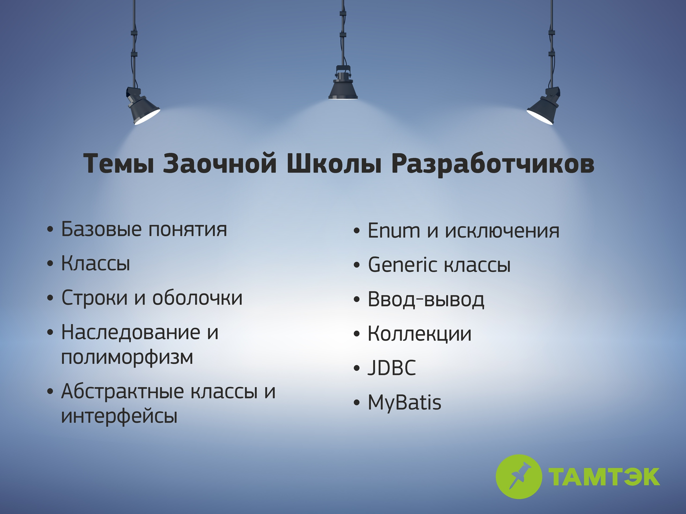
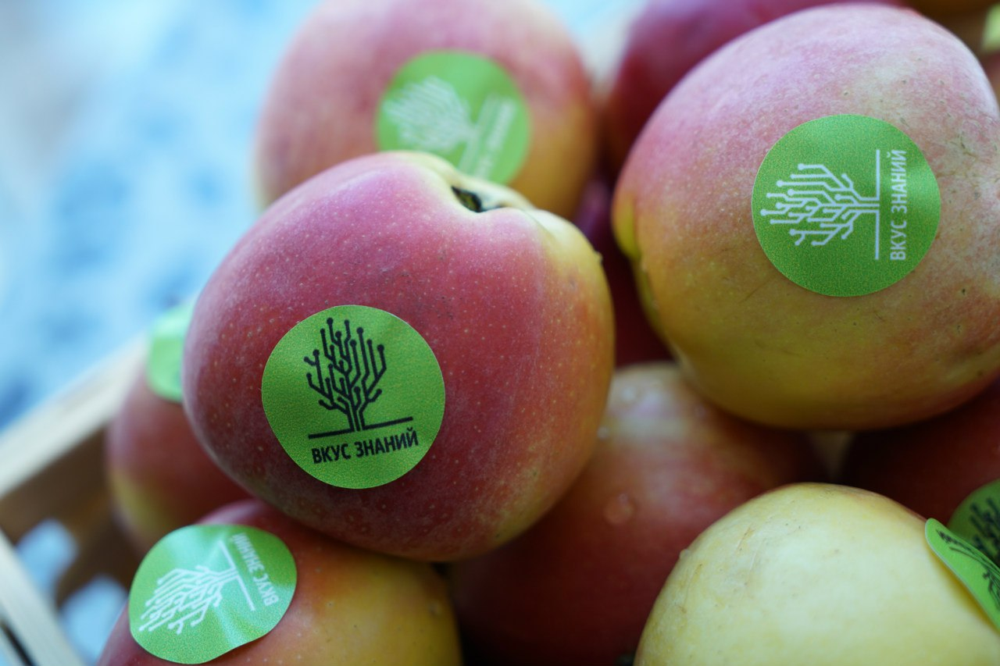

Школа разработчиков: все, что вы хотели знать
В этой статье вы найдете ответы на самые популярные вопросы, которые возникают у наших будущих стажеров.
Поехали!
— Расскажите о Заочной школе “Тамтэка”. Что это и кому она подходит?
— Заочная школа проводится в формате онлайн-обучения. После регистрации в
системе
вам открывается доступ к лекциям и заданиям, выполнять которые можно в любое удобное для вас время.
Данный формат подходит всем, кто в состоянии решить наши задания.
— Какие темы будут освоены в Заочной школе?
— Во время лекций и заданий Заочной Школы изучаются основы современного
программирования. Деление на backend и frontend отсутствует.

— Каким образом будут проверяться задания?
— Выполненные задания проверяются автоматически на сервере. После того, как вы
отправите очередное задание на сервер, его проверит наша автоматическая тестирующая система. Если все
тесты пройдут успешно, ваш куратор получит письмо об этом и откроет вам следующее задание. Периодически
ваш куратор будет проводить “ручной” анализ кода и писать вам замечания, давать рекомендации по его
улучшению. Более того, в любой момент после выполнения четвертого задания куратор может пригласить вас
на личную встречу. Всегда полезно получить обратную связь вживую и сразу задать свои вопросы.
— Предположим, я прошел Заочную Школу. Что меня ждет дальше?
— Дважды в год мы объявляем контрольные точки. Если вы успели решить все задания до
обозначенного срока, то вы можете быть приглашены на второй этап — очное обучение. Отбор проводится
согласно рейтингу: качество выполнения заданий и отзывы кураторов.
— А детальнее про очное обучение?
— Очное обучение проводится в формате Воскресной школы: занятия проходят по
воскресеньям в нашем офисе (в настоящее время в связи с эпидемией COVID-19 они проводятся дистанционно).
Здесь предлагаются два направления на выбор: backend- разработка или разработка в области web - full
stack. Наши преподаватели будут читать вам лекции и вести практические занятия по разным вопросам
современного программирования. Такая программа длится 4 месяца. В ходе Воскресной Школы вам предстоит
выполнить так называемое “Основное Задание” - полнофункциональный проект по учебному техническому
заданию, приближенному к техническим заданиям промышленной разработки.
— Отлично, а что потом?
— По итогам Воскресной школы у лучших стажеров может появиться возможность получить
приглашение на стажировку и работу в нашей компании.
— А что еще ждет меня в «Тамтэке»?
— А вот это уже совсем другая история! Мы с радостью отвечаем на этот вопрос во
время наших открытых мероприятий. Следите за нашими новостями в группе https://vk.com/thumbtack
